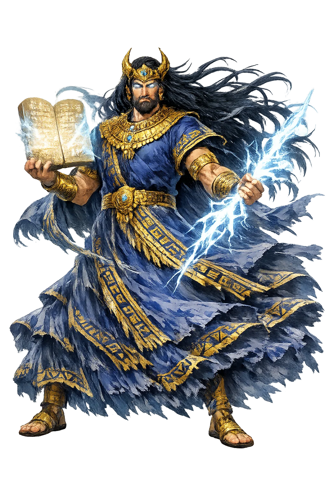

The Living Myth
Phonological Reconstruction, Wind, Air, Storms, Kingship · The Lord of the Command

Stories of Enlīl
Enlīl's myths are myths of sovereignty and consequence. He gives kingship, but he also sends the flood; he decrees fate, but he must answer to the assembly of the gods. His power is supreme within the Sumerian cosmos, yet it is not arbitrary — it is bound to the custody of order.
In the Sumerian poem Enlīl and Ninlil (ETCSL 1.2.1), the young god sees the goddess Ninlil bathing in the pure canal of Nippur and desires her. He woos her, she conceives, and the assembly of the gods, scandalized, banishes the lord of the air from his own city. What follows is the strangest courtship in Sumerian literature: in the Underworld Enlīl meets Ninlil in the guise of the gatekeeper, then of the river-man of the netherworld's river, then of the ferryman of the dead — and each time she recognizes him and welcomes him. From these unions are born the three great gods of the world below: Nergal the warlike plague-god, Ninazu the serpent-god, and Enbilulu, lord of the river and canals. The poem closes with Ninlil's proud declaration that her husband's exile has now filled the netherworld with deities of his own line. The myth explains how the lord of heaven came to plant his seed in the Great Below: sovereignty is only complete when it fathers its own counterpart in darkness.
In the Akkadian epic Atrahasis (tablets I–III, Old Babylonian copies from Nippur and later recensions), humankind, created to relieve the gods of toil, multiplies until 'the land bellowed like a bull' and the noise keeps Enlīl from sleeping. Three times he persuades the divine assembly to reduce the population — first plague, then drought, then at last the flood, the weapon released 'like a raging storm' against the cities. Each time Enki quietly undermines the plan from below; only the flood drowns all but Atrahasīs, whom Enki warns through the reed wall of his house. When Enlīl discovers the survivors, his fury gives way to negotiation: humanity will live, but under permanent controls — disease, stillbirth, and the socially infertile classes enumerated in the epic's grim final tablet. The myth is Mesopotamia's great theodicy: mortality is not cruelty but crowd control, and the god who cannot sleep becomes the god who defines the human condition.
In the hymn Enlil in the Ekur (ETCSL 4.05.01), composed for the temple at Nippur, Enlīl is the axis on which the whole cosmos turns: without Enlīl, the great mountain, no city is built, no creature is born. His word (inim) is the decree (nam-tar) that fixes the destinies of gods, kings, and lands; his glance is the flood that sweeps away whatever he rejects. Sumerian royal ideology builds on this: the Sumerian King List opens by declaring that kingship descended from heaven, and it is Enlīl who gives each ruler his mandate — who 'looked about' for the right city and raised its shepherd above the land. The Ekur itself is imagined as a cosmic tether, its foundations rooted in the netherworld and its summit brushing heaven, with Enlīl enthroned at the still point between. The hymn means that all legitimate order, from a city wall to a king's crown, is a local application of one central decree.
In the Babylonian creation epic Enuma Elish (tablets VI–VII), the theology of Nippur is quietly nationalized by Babylon. After Marduk defeats Tiāmat, the assembled gods do not merely thank him: they hand him the offices of his elders. Anu yields his authority over the gods, Ea yields wisdom, and Enlīl's defining function — the decree of destinies — is transferred wholesale, so that one of Marduk's fifty names makes him 'Enlil of the gods, without whom no command is given.' The process is presented not as usurpation but as devolution: the great gods themselves vote the storm-god of Babylon into the rank of king of the cosmos. The epic is a charter, recited at Babylon's New Year festival, explaining to every pilgrim why that city's patron rules the universe. The myth means that theological rank follows political rank — and that the mightiest of the old order survives by being absorbed into the new.
In the Anzu epic (Old Babylonian and Standard Babylonian versions), cosmic order nearly ends through a burglary. Enlīl, bathing in the holy waters, lays down the Tablet of Destinies — the document by which all decrees are ratified — and the monstrous lion-eagle Anzu, earlier favored by Enlīl himself, seizes it: 'I shall take the gods' tablet of destinies… the decrees of the gods I will determine.' Powerless to rule without his instrument, Enlīl withdraws in silence; the gods first send Adad, then the fire-god Girra, and at last the warrior Ninurta, whose storm-weapons batter Anzu until the tablet is recovered and the universe's paperwork restored. The epic belongs to the same imaginative world as the flood story: for Enlīl, catastrophe comes not from rebellion of subjects but from failure of custody. It means that sovereignty lives in the document as much as in the god — and that the king of the gods, like every king, is only as secure as his seal.
Wind, Storm, Kingship
The name is written 𒂗𒇸. Standard Assyriology transliterates it as Enlil. But in the phonological grammar of Sumerian and Akkadian, the length of the second vowel remains an open question — and it is here, in the space between the written sign and the spoken sound, that this temple operates. This node of PuniCodex is dedicated to the phonological reconstruction and didactic grammar of the ancient Near East. We mark vowel length not because it is certain, but because it is discussable. The macron is a question mark made visible.
Enlīl is nevertheless the king of the Sumerian gods, the invisible sovereign whose breath is the wind and whose word is fate. He rules from the Ekur, the 'Mountain House' at Nippur, the cosmic axis where heaven and earth meet. Storms are his messengers; kingship is his gift.
The air that animates the world and carries the voice of command across the Mesopotamian plain; his seven winds sweep the disobedient flat.
The 'Mountain House' at Nippur, the temple whose foundations root in the netherworld and whose peak touches heaven — the axis of the cosmos.
The grantor of the me of kingship; no Sumerian city could rule without Enlīl's mandate, pronounced at Nippur and recorded in the King List.
The thunderous voice that pronounces destinies and sends the destructive storm when order is violated; his word admitted no appeal.
From the original script to the living URL
𒀭𒂗𒆤
The name in its original Mesopotamian form. Enlīl (𒀭𒂗𒆤) is attested in the source tradition — “Reconstruction node for the Sumerian/Akkadian deity Enlil: the macron marks a discussable vowel length, not a canonical spelling claim.”. Its macron-length vowels carry the full phonetic and orthographic weight of the source tradition.
enlil
Reduced to plain enlil, the name loses everything that made it specific: macron-length vowels. What remains is an ASCII string that machines can parse but that no longer speaks with its original voice.
Enlīl
The Unicode restoration recovers what ASCII flattened. Enlīl restores macron-length vowels, returning the name to its original written dignity. The domain encodes to Punycode, but the browser displays the truth.
Enlīl.com → xn--enll-sya.com
The non-ASCII characters in Enlīl are encoded while the ASCII remains visible. To the DNS, it is Punycode. To humanity, it is Enlīl.
Owned, ideal, and ASCII forms of Enlīl
Enlīl
Restores 𒀭𒂗𒆤. The live temple domain — enlīl.com.
enlil
Flattens 𒀭𒂗𒆤. The plain ASCII fallback — what DNS and legacy systems see.
How Enlīl was spoken
How Enlīl travels from ancient script to the modern URL
Sumerian EN 'lord' + LÍL 'wind, air, spirit'; hence 'Lord of the Air/Wind'.
Chief deity of the Sumerian pantheon, god of air, storms, and destiny.
The Unicode restoration Enlīl uses a macron to preserve length; the ASCII form Enlil loses the vowel-length marker. The cuneiform form is not registrable in .com.
Enlīl is the god of atmosphere in its political sense: the medium through which command travels. A king's proclamation is heard because the air carries it; a storm arrives because the lord of the air sends it. This is not metaphor but Mesopotamian metaphysics: power is a physical force, and the god who rules the air rules the channel through which all other powers flow.
Enter Extended Lore